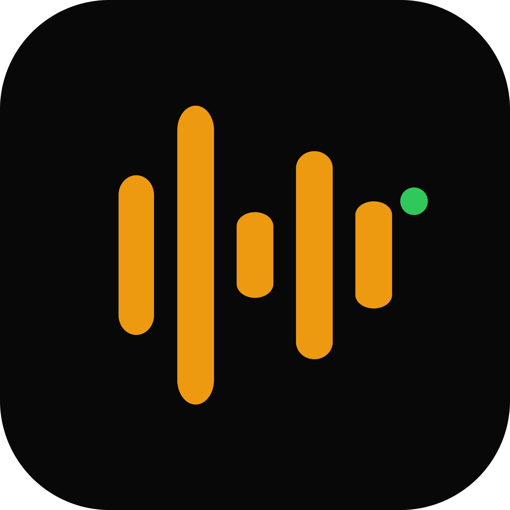

DJ Haze Live Channel
Set started — live from the booth.

trackcastReal-time DJ broadcasting
Set started — live from the booth.
Kessler — Soft Drift
Roza Terenzi — Drawn · 124 BPM
Priori — Winged
Vael — Cascades · 126 BPM
How it works
Install TrackCast on your Mac. One .dmg, no dependencies.
Create a Telegram bot, add it to your channel, verify in-app.
Hit Start. Every track change goes live to your audience automatically.
What it is
TrackCast reads the track currently playing in your DJ software, posts clean updates to Telegram, and keeps a set history you can export later.
The direction is deliberately restrained: real software first, no fake dashboards, no inflated launch language, no extra layer between the DJ and the listeners.
Current builds
The site is honest about the state: macOS is the usable drop, Windows is present in the codebase but still needs a packaged build.
Live broadcast flow, Telegram verification, set history, export, and guarded Stop/Delete actions are in place.
Download .dmgWindows has a dedicated app folder and Unbox sidecar path, but the public installer should wait for one clean packaged build.
Feedback
Send the build version, your DJ software, what happened, and what you expected. Weird edge cases are useful here.